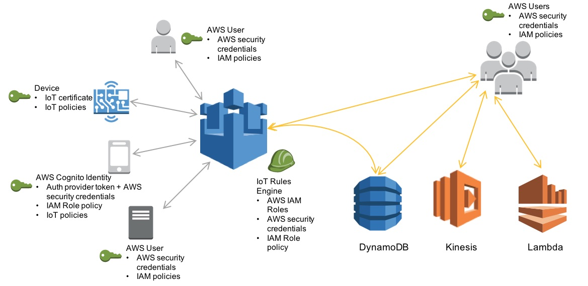

Announced in 8th Oct 2015, AWS is officially embracing IoT into one of their service.
Excitingly enough, still in beta version, AWS IoT is a managed cloud platform that able to support billions of devices and trillions of messages with capabilities to interact with other AWS services like AWS Lambda, Amazon Kinesis, Amazon S3, Amazon Machine Learning, and Amazon DynamoDB.
With this smartly-designed infrastructure from AWS, is really a big deal to build an integrated IoT ecosystem that able to gather, process, analyze and act on data that provide by any smart-devices.
Security and Identity for AWS IoT (Beta)
The most concern subject about IoT is the security. (Currently, there's a group of security researchers working hard tackling this concern)
But this is not the case in AWS IoT, they handle on security very seriously. Have a look at the picture below:

The AWS IoT security model is one of shared responsibility, with an emphasis on security in the cloud and cover strong authentication, fine grained authorization and secure communication.
For each of IoT device to be connected require credentials (X.509 certificate and AWS credential) to access the message broker or Thing Shadows service.
TLS is used to encrypts the connection between the device and the broker and this create an end-to-end secure communication.
As for fine-grained access control, AWS Identity and Access Management (IAM) is used to securely control access to AWS services and resources for your users.
Walkthrough for AWS CLI, MQTT and Yun
Also for this post, I made a walkthrough video about Amazon Web Services Command Line Interface for IoT, and work together with Mosquitto and actual IoT device (in this case, I'm using Arduino Yun).
For this video walkthrough is based on the AWS IoT (Beta) Documentation for Developer Guide